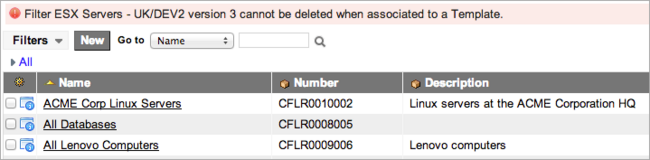

Certification Filters
Contents
1 Overview
A certification filter creates a subset of ServiceNow records to audit, typically from configuration items (CI) of a certain type, such as all UNIX servers in a specific datacenter. However, you can define a filter for any ServiceNow table by using any set of system-supported conditions. Records identified by a filter are then audited by the system for expected attributes or relationships, depending on the audit type.
You can create multiple versions of a filter, reactivate inactive versions, and select the version you want to use in a template or a certification schedule. Only the active versions of a filter are available for selection in template records. You can use a single filter for multiple certification templates or schedules.
Filters are used in these applications:
- Data Certification: Validates CMDB data.
- Architecture Compliance: Manages reviews of CMDB data in architecture compliance audits to determine which configuration items (CIs) match expected attributes.
- Desired State: Manages reviews of CMDB data to determine which CIs match a desired state for both attributes and relationships.
- Compliance: Manages reviews of records from any ServiceNow table to determine which records match an expected set of attributes and related record conditions.
- Governance Risk and Compliance: Generates audits and tests to ensure that controls are being followed and creates tasks to track corrective actions.
2 Additional Roles
In the base ServiceNow system, users with the certification_admin role have limited system rights and might not have access to the tables required for creating a filter. When assigning compliance resources, make sure certification_admin users have any additional roles they might need. For example, a user might need roles that grant access to the Company [core_company] table.
3 Creating Filters
You can create as many versions of a filter as necessary and designate which versions are active and available for selection in Compliance template records, Governance Risk and Compliance control test definitions, or Data Certification schedule definitions.
- Navigate to one of these modules:
- Compliance > Filters
- GRC > Administration > Filters
- Data Certification > Schedules > Certification Filters
- Click New.
- Fill in the fields (see table).
- Click Submit.
- To create another version of this filter, open the record and modify the name, table, or conditions.
- Note: You can change a filter Description without creating a new version.
- Click Update.
{kind=link}
{kind=link}
| Field | Description |
|---|---|
| Name | [Required] Filter name. |
| Description | [Optional] Describes this filter. You can change the description of a filter without creating a new version. |
| Number | [Read-only] Displays the automatically assigned filter identification number. All versions of a filter have the same number. |
| Table | Specifies the table containing the records to select. The template or schedule that uses this filter works on this table. For example, you might select the ESX Server [cmdb_ci_esx_server] table to select VMware ESX servers. |
| Active | Makes this filter available for use from the Filter field on the Certification Template or Schedule Definition form. Multiple versions of a filter can be active. You can activate or deactivate a filter without creating a new version. |
| Version | [Read-only] Indicates the version of this filter. Any changes to this filter, except to the description or the Active check box, makes it inactive. The system creates a new version of the updated filter and marks it as active. The system saves all versions of the filter and makes them available for reactivation. |
| Filter condition | Specifies the fields, operators, and values that create the filter. The available fields are based on the table selected. The condition builder shows the number of records that match the conditions. Click the refresh icon to recalculate the number of matching records when you edit the conditions. |
{kind=link}
4 Managing Filter Versions
4.1 Displaying Versions in a List
The default list of filters displays only the active version of each filter. To see all filter versions in the list view, select All in the breadcrumbs.
{kind=link}
4.2 Managing Versions in a Form
You can view and manage all versions of a filter from the Certification Filter form.
- Open any version of a filter.
- The Other Versions related list displays all other versions of this filter, both active and inactive. The system prevents you from editing either the filter version or the record number in the list view.
- Click any version in the related list to display the record for that version.
- To make an inactive filter the current version, open the filter, edit it if desired, and then click Revert.
{kind=link}
{kind=link}
4.3 Copying Filters
To create a new filter from an existing one:
- Open the filter record you want to copy.
- Make sure to change the filter name or description to distinguish the new filter from the original.
- Make any other necessary changes.
- Right-click in the header bar and select either Insert or Insert and Stay from the context menu.
{kind=link}
{kind=link}
4.4 Deleting Filters
Only users with the certification_admin or admin role can delete filter versions. You cannot delete a filter that is being used in a template or a scripted audit.
- To delete a single filter version, open that version record and click Delete.
- The system hides the Delete button for filters that are in use. If you delete the latest version of a filter that is active, the previous version of that filter is reset to Active.
- To delete all unused and inactive versions of a filter, open any version of that filter and click Delete inactive versions under Related Links.
- When prompted, click OK to proceed.
- The system deletes unused filter versions. A message in the header bar identifies filter versions that cannot be deleted because they are used in a template or scripted audit.
- 
{kind=link}
{kind=link}